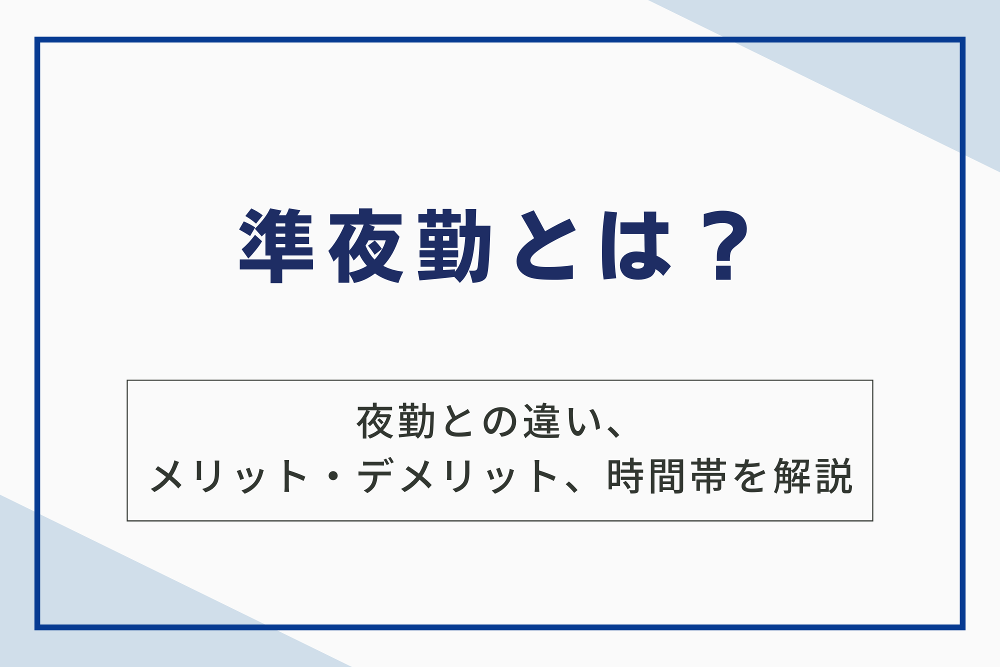

夜勤ほど遅くなく、日勤よりも遅い時間帯で働く「準夜勤」。働き方が多様化する中で、この働き方に関心を持つ方も増えているのではないでしょうか？
本記事では、準夜勤の定義や時間帯、夜勤・深夜勤との違い、メリット・デメリット、業界別の導入事例、働き方のポイントなどを詳しく解説します。準夜勤を検討している方は、ぜひお読みください。

準夜勤とは？
準夜勤とは、夕方から深夜にかけての勤務形態を指します。詳しくみていきましょう。
準夜勤の定義と一般的な時間帯
準夜勤とは、夕方から深夜にかけての時間帯に行われる勤務形態です。多くの場合、日勤と夜勤の間の時間帯を指し、24時間体制が必要な職場で導入されています。
標準的な勤務時間帯は16時～翌1時頃までですが、施設によっては異なる場合があるでしょう。近年では、24時間体制の維持や人材確保の観点からも注目されており、様々な業界で導入が進んでいます。
準夜勤が導入される背景
近年、医療・介護業界を中心に、24時間体制のサービス提供が求められる職場が増えています。こうした状況下で、日勤・夜勤だけの2交代制勤務だけでは、労働時間の偏りや職員の負担増加といった課題が生じやすくなります。
準夜勤帯を設けると、夜勤帯へのスムーズな業務の引継ぎや、日勤帯の準備作業などを効率的に行えます。
準夜勤と夜勤の違い
夜勤と夜勤の違いは主に勤務時間と勤務体系にあります。準夜勤は夕方から深夜までの8時間勤務（例：16時～翌1時）で、3交代制に多く、夜勤明けも日勤として扱われます。
一方、夜勤は夕方から翌朝までの約16時間勤務（例：16時～翌10時）で、2交代制に多く、夜勤明けは勤務日とされ、翌日が休みになるのが一般的です。休憩時間は準夜勤で約1時間、夜勤で約2時間が設けられています。
準夜勤と深夜勤の違い
準夜勤と深夜勤は、どちらも夜間勤務ではありますが、時間帯が異なります。多くの病院や施設では、3交代制勤務の中で、日勤・準夜勤・深夜勤の3つの時間帯を設けています。
それぞれの勤務時間は8時間程度である場合が多いですが、施設によっては変則的な3交代制を採用しています。深夜勤は、深夜から朝方にかけての勤務です。
一方、準夜勤は夕方から深夜にかけての勤務となります。仮に17時～24時が準夜勤、0時～9時が深夜勤とした場合、22時～24時が準夜勤と深夜勤の重複する時間帯となります。
関連記事：工場勤務の「日勤」とは？夜勤・交替勤務との違い、働き方のメリット・デメリットを解説！ – 株式会社ベルジャパン

準夜勤のメリット・デメリット
準夜勤には、夜勤と比較して生活リズムを維持しやすい、拘束時間が短いなどのメリットがあります。一方で、給与が夜勤より低い場合がある、勤務間隔が短く疲労が蓄積しやすい場合があるなどのデメリットも存在します。それぞれ見ていきましょう。
メリット
準夜勤には夜勤と比較して多くのメリットがあります。まず、生活リズムを保ちやすい点が大きな魅力です。
準夜勤は夕方から深夜までの勤務のため、夜勤のように昼夜逆転になりにくく、睡眠時間の確保がしやすいです。次に、勤務時間が約8時間と夜勤より短く、身体的な負担が軽減されます。
また、22時～翌5時に勤務すれば夜勤手当（深夜割増賃金）が支給され、日勤よりも高収入が期待できます。さらに、昼間の時間を有効活用できるのも利点で、趣味や家事、勉強など自己成長の時間に充てられます。
準夜勤は働きやすさと収入面のバランスが取れた勤務形態といえるでしょう。
デメリット
準夜勤にはいくつかのデメリットも存在します。まず、深夜に退勤するため公共交通機関が利用できない場合があり、帰宅手段の確保が難しくなります。
自家用車がない人にとってはタクシー利用が必要になる場合もあり、交通費の負担が大きくなる可能性があるでしょう。次に、夜勤と比べて夜勤手当が少ない、または支給されない職場もあり、収入面で劣る場合があります。
また、3交替制の勤務体系では、昼勤→準夜勤→深夜勤と勤務時間が変動するため生活リズムが乱れやすく、疲労が蓄積しやすいのもデメリットです。これらを踏まえ、自身の生活環境や体力、通勤手段などを考慮して、準夜勤の働き方が自分に適しているかを慎重に判断してください。
関連記事：【夜勤きつい】もう限界…と感じたら試したい6つの対処法！ – 株式会社ベルジャパン
業界別の準夜勤の実態3つ
準夜勤は、業界によってその実態は様々です。ここでは、代表的な業界の例を3つ挙げて説明します。
| 業界 | 時間帯の例 | 特徴 |
| 看護・介護 | 16時～翌1時22時～翌7時 | 3交代制の一環として導入されている場合が多い |
| 製造業 | 17時～23時22時～翌6時 | 24時間稼働の工場などで、生産ラインの維持のために導入されている |
| 警備業 | 18時～翌2時21時～翌5時 | 夜間のセキュリティ確保のため、必要不可欠な勤務形態 |
| その他 | 24時間体制のコールセンターや、深夜営業の飲食店などでも準夜勤の形態が見られる |
顧客ニーズの多様化に対応するために、準夜勤は様々な業種で導入されています。
関連記事：【5分でわかる】3勤3休のメリット・デメリットを徹底解説！仕事を探す方法もご紹介！ – 株式会社ベルジャパン
準夜勤の働き方
準夜勤の働き方は、勤務時間やシフトによって生活に影響を与えるため、工夫が必要です。勤務時間は施設により異なりますが、例として16時～翌1時や22時～翌7時などがあり、途中に1時間の休憩が設けられます。
シフトは日勤と組み合わされる場合もあるため、無理のない働き方を心がけ、可能であれば準夜勤翌日は休みにするなど調整しましょう。休日や有給休暇も労働基準法に基づいて取得可能です。
プライベートとの両立には、生活リズムを整えるのが重要で、帰宅後の早めの就寝や休日のリフレッシュなど、メリハリのある生活がポイントです。健康と働きやすさを両立させるため、自分に合った勤務スタイルを意識しましょう。
準夜勤に適した人とは？
準夜勤は夕方から深夜にかけての勤務であるため、日勤とは異なる生活リズムへの適応が必要です。夜型で夕方以降に活動的になる人や、朝が苦手な人には向いています。
また、深夜まで働くため一定の体力が求められ、健康管理ができる人が望まれます。家庭環境も大切で、家族の理解やサポートがあれば、仕事と私生活の両立がしやすいでしょう。
さらに、準夜勤は少人数体制で行われる場合が多く、責任が重くなる場面もあるため、責任感があり臨機応変に対応できる人が適しています。急なトラブルにも冷静に対応できる力が必要とされるため、自分の性格や体調、生活環境を踏まえて適性を判断するのが重要です。
準夜勤のよくある質問3つ
準夜勤に関するよくある質問を3つまとめます。
質問1.準夜勤のシフトは、どの程度事前にわかりますか？
準夜勤のシフト確定時期は職場によって異なります。多くの病院や介護施設では1ヶ月前、小規模な事業所では2週間前、飲食店や小売店では1週間前に決まる場合が一般的です。
法律により1週間前の通知が義務づけられる場合もありますが、急な欠員などで直前に変更されるケースもあります。準夜勤を希望する際は、面接時にシフトの確定時期や変更の可能性を確認し、柔軟に対応できる姿勢を持つといいでしょう。
質問2.準夜勤の求人を探す際に、特に注意すべき点はありますか？
準夜勤の求人を探す際は、いくつかの重要なポイントに注意が必要です。まず、勤務時間帯や休憩時間が生活リズムに合うかを確認しましょう。
勤務体系やシフトの組み方も要チェックで、頻度や希望提出の有無などを事前に把握しましょう。また、夜勤手当の有無や支給額を確認し、想定収入を計算しておきましょう。
通勤手段の確保も重要で、深夜の交通状況を事前に調べてください。仕事内容や求められるスキルが自分に合っているか、雇用形態が希望に合うかも確認しましょう。
職場環境は可能であれば見学や聞き取りを通じて把握し、入職後のミスマッチを防ぐ工夫も大切です。
質問3.準夜勤と他の勤務形態(日勤、夜勤)との間の変更は可能ですか？
準夜勤と日勤・夜勤との変更可能性は、企業や職種によって異なります。 多くの場合、社内規定や部署の状況、人員配置などによって変更の可否や手続きが決まります。
希望する場合は、上司や人事担当者に相談してみましょう。 中には、定期的に勤務形態をローテーションしている職場もあります。
求人情報を確認したり、面接時に質問したりして、変更の可能性や頻度について事前に確認してください。
まとめ
本記事では、夜勤との違いやメリット・デメリット、時間帯、業界別の導入事例などを解説しました。自身の生活リズム、体力・健康状態、家庭環境などを考慮し、準夜勤のメリット・デメリットを理解した上で、自分に合った働き方かどうかを判断しましょう。
なお、株式会社ベルジャパンは、有料職業紹介業のなかでも豊富な実績ときめ細やかなサポート体制を強みとしており、求職者・企業双方から高い評価をいただいております。独自のネットワークを活かして非公開求人を含む多様な案件をご紹介できる点が大きな特長です。
さらに、専任コンサルタントがキャリアやスキル、ライフスタイルなどを詳しくヒアリングすることで、一人ひとりに最適化されたサポートを実現しています。⇛ベルジャパンに相談する